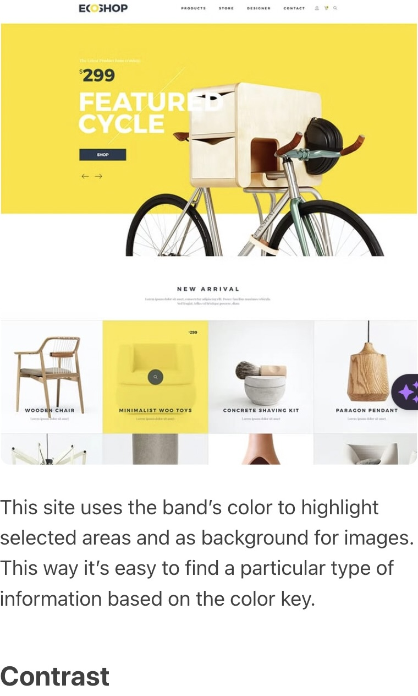
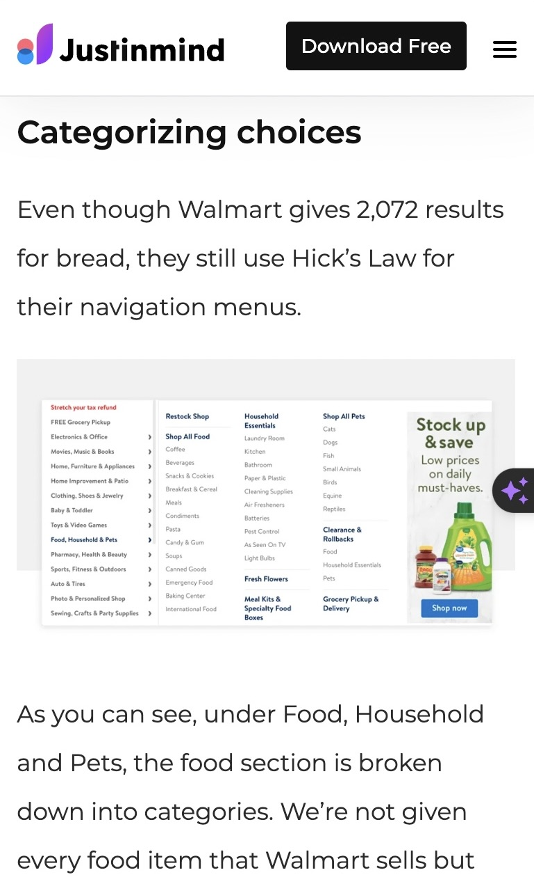
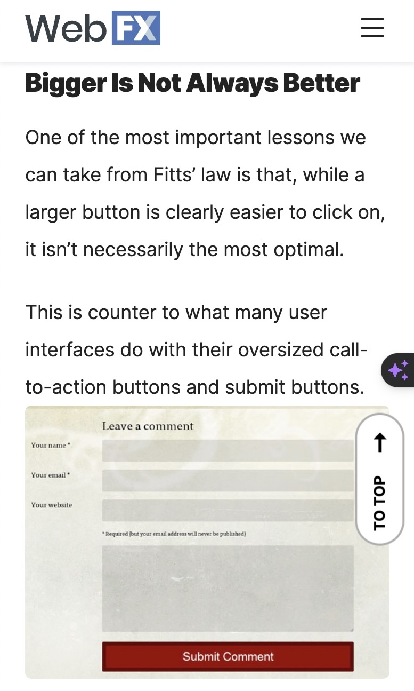

Marco Quintero
Envatotuts+
webdesign.tutsplus.com This site utilizes color strategically as an organizational and stylistic tool. Contrasting hues highlight key items like buttons and links, directing focus. Additionally, color establishes visual brand identity through the band's signature purple used prominently behind images. Information is organized into a hierarchy via coded colors. This thoughtful color application enables intuitive navigation and reinforces the band's bold aesthetic.
Justinmind
www.justinmind.com Walmart totally utilizes Hick's Law in their site navigation - even with over 2,000 bread options, we're not overwhelmed! The menus are broken down into intuitive categories that make it easy to find what we need. Like under 'Food' we've got logical groups like 'Pasta' instead of every single pasta choice imaginable. And when we click into Pasta, it's organized again by types like fresh or filled pastas. By chunking things into useful groups, it's way less stressful to shop for bread or pasta at Walmart. The site design guides us nicely.
WebFX
webfx.com Fitts' Law shows that bigger isn't always better for clickable elements. A lot of sites use massive CTA buttons, but that's not optimal. Fitts' Law is logarithmic - so making a small button 20% larger boosts usability way more than boosting a big button 20%. Counterintuitively, once a button is fairly large, making it even bigger doesn't help much. So don't go crazy making things huge! A balanced approach to sizing works best. Tiny stuff is hard to click, but eventually there are diminishing returns on bigger stuff. Moderation is key with Fitts' Law.